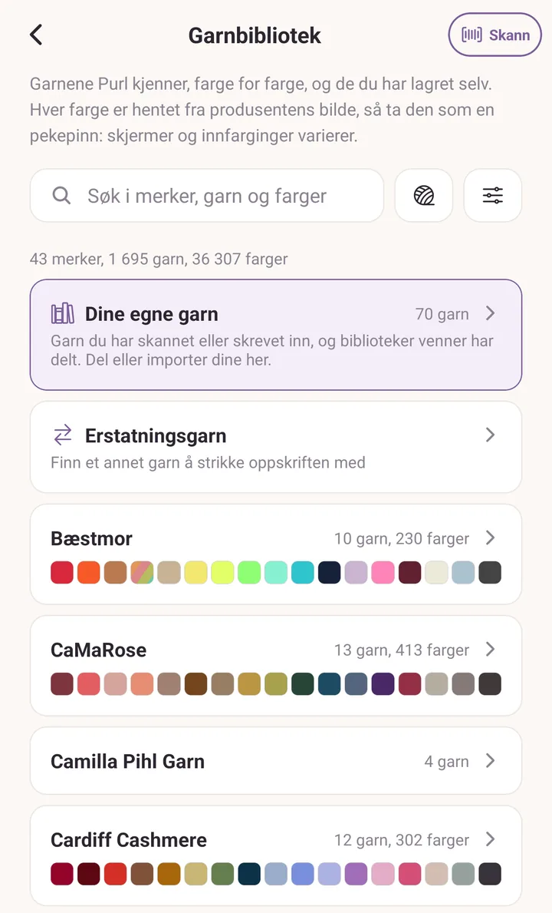
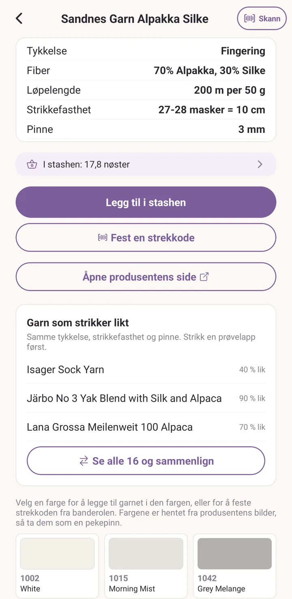
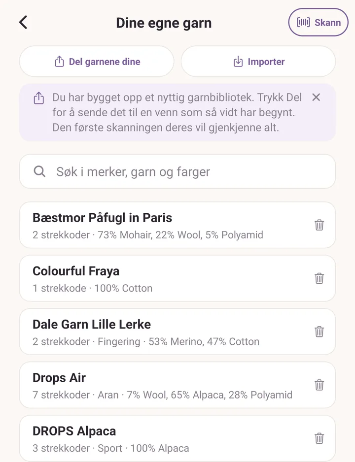

Strekkoder og garnbiblioteket
Å skanne en banderole skal ikke være en engangs utfylling. Det skal lære appen hva det garnet er, så neste skanning, av deg eller av en venn du deler med, har svaret klart.
Det er det garnbiblioteket er til for.
På denne siden 16
Den grunnleggende gangen
Du står i garnbutikken. Du kjøper to nøster av et garn du aldri har ført opp. Hjemme:
- Trykk Stash, og så Legg til.
- I skjemaet Legg til garn trykker du på strekkodeknappen ved siden av Velg fra biblioteket.
- Hold banderolen inne i rammen på Skann et nøste.
- Purl kjenner igjen garnet og fyller ut skjemaet: merke, navn, vekt, fiber, strikkefasthet, anbefalt pinne. Du legger til antall nøster.
- Trykk Legg til i stashen.
Den gjenkjenningen kommer enten fra den medfølgende katalogen eller fra et garn biblioteket ditt allerede kjenner.
Er koden ny, åpner skjemaet med strekkoden festet og ingenting annet utfylt. Du skriver inn merke, navn, vekt og resten, og lagrer. Den lagringen lærer opp biblioteket i stillhet: neste skanning av den koden blir gjenkjent.
En strekkode hører til en farge
En garnstrekkode er en butikkode for én nyanse, ikke for en hel garnlinje. Kassaapparatet og plukklisten virker slik, og det gjør Purl også.
Så en skannet kode fester seg til en fargevariant av et garn der den kan, og til selve garnet ellers. To følger du vil legge merke til:
- Skann en kode Purl har sett på en farge, og fargen kommer tilbake med den, fargeprøve og alt, ikke bare merke og navn.
- Skann en farge du allerede eier, og spørsmålet er det nyttige: Legg til et nøste på raden du har, eller Nytt fargeparti for denne banderolen.
Skann i Garnbibliotek ser også etter det du har først: et nøste du allerede eier, åpnes i stashen, med Legg til et nøste ett trykk unna. Har du mer enn ett fargeparti, spør Purl først hvilket det er.
Å rette en farge i skjemaet retter hva koden betyr. Koden flytter seg til fargen du lagret den under.
Skjermen Garnbibliotek
Åpne Mer, og så Garnbibliotek under Verktøy. Bibliotekknappen øverst i Stash åpner det også.
Øverst står en kort merknad om hvor fargene kommer fra: hver farge er hentet fra produsentens bilde, så ta den som en pekepinn. Så kommer et søkefelt, med fargeknappen og Filtrer og sorter ved siden av, og en linje som sier hvor mange merker, garn og farger biblioteket har. Så kommer Dine egne garn, Erstatningsgarn og merkene, fra A til Å. Skann øverst åpner kameraet.

Hva en skanning gir deg her:
- En kode Purl kjenner: garnets egen side åpner seg, i fargen sin når koden er på en farge, med en linje som sier det, for eksempel Strekkoden ... hører til dette garnet, i 1042 Grey Melange.
- En ny kode: et banner øverst sier Strekkoden ... er ny for Purl. Finn garnet den hører til, med søk eller via merket, og trykk Fest ... her på siden til garnet. Eller trykk Skriv inn et nytt garn for å lagre den som et av dine egne. Avbryt fjerner banneret.
Inne i et garn
Trykk på et merke, og så på et garn, for å åpne siden til garnet. Et søketreff åpner den samme siden.
- Fakta om garnet: tykkelse, fiber, løpelengde, strikkefasthet og pinne.
- I stashen: hvor mange nøster du har, i fargen du valgte når du har den. Trykk på linjen for å åpne garnet i stashen.
- Legg til i stashen, eller Legg 1042 Grey Melange i stashen når du har valgt en farge.
- Finn fargen i andre garn, når du har valgt en farge som har en farge.
- Fest en strekkode og Åpne produsentens side.
- Dine strekkoder på dette garnet, med Rediger, når du har festet en.
- Garn som strikker likt: se nedenfor.
- Fargene, hver med farge, nummer og navn. Trykk på en for å velge den. En farge som har en av strekkodene dine, sier fra om det.

Feste en strekkode
Fest en strekkode på siden til et garn åpner kameraet. Har du valgt en farge, havner koden på den fargen: Strekkoden ... er nå på 1042 Grey Melange. Når du skanner den, fylles fargen inn også. Uten en valgt farge havner den på garnet.
Flere koder per garn er hele poenget: produsentene sirkulerer koder mellom emballasjepartier, så et gammelt nøste og et ferskt bærer ofte hver sin.
Er koden allerede på et annet av garnene dine, spør Purl først Flytte strekkoden?
Koden lagres på din egen kopi av garnet, som havner i Dine egne garn. Dine strekkoder på dette garnet, og så Rediger, åpner den.
Dine egne garn
Dine egne garn på forsiden har garnene du har skannet eller skrevet inn, kopiene dine av kataloggarn med strekkodene dine på, og biblioteker venner har delt. Øverst står Del garnene dine og Importer, så et søkefelt og listen. Hver rad sier hvor mange strekkoder garnet har; søppelbøtta ved siden av fjerner garnet. Skriv inn et nytt garn nederst starter et nytt.

Trykk på et garn for å redigere det:
- Strekkoder: en chips for hver kode. Legg til en ved å skrive den inn i Legg til en strekkode… og trykke Legg til, eller med Skann. Fjern en med krysset.
- Farger, når Purl kjenner garnet i noen: hver farge med koden sin. En farge du har skannet eller lagret selv viser også nyansen sin og strekkodene som peker på den. Trykk på krysset for å glemme en den har tatt feil av.
- Merke, Navn, Fiberinnhold (en andel for hver fiber, og Legg til fiber), Vekt, Gram per nøste, Meter per nøste, Strikkefasthet og Anbefalt pinne.
Lagre tar vare på endringene, og Avbryt går ut uten dem. Fjern tar garnet og strekkodene ut av biblioteket på denne enheten. Legg til i stashen under dem legger garnet i stashen din.
Den medfølgende katalogen
Purl kommer med en utvalgt katalog over mer enn 40 garnprodusenter og garnlinjene deres. De fleste er nordiske, fra Sandnes Garn, DROPS og Gjestal Garn til Novita, og noen få kommer fra Tyskland, Sveits, Italia og Storbritannia. Merke og garnnavn for alle sammen, vekt, fiber og lengde for de fleste, og fargene til de fleste garn.
Forsiden viser merkene fra A til Å. Dine egne garn blir aldri begravd under dem: de har sitt eget kort øverst, og i et søk kommer de først.
Det globale søket finner også katalogens garn og farger, på navn eller fargenummer. Trykk på et treff, så åpner biblioteket seg på det garnet, med fargen valgt.
Filtrer og sorter
Knappen Filtrer og sorter står ved siden av søkefeltet, og på et merkes side over garnene. Den åpner et ark:
- Sorter: A til Å, Flest farger, Tynnest først eller Tykkest først. Listene åpner i A til Å. Et merkes side åpner i Produsentens rekkefølge, slik produsenten selv lister garnene sine, og har den blant valgene. Et garn som ikke lages lenger, står sist i alle rekkefølger.
- Tykkelse, Fiber og Pinne, hver med Alle først. Pinnene er delt i grupper: Under 3 mm, 3 til 3,75 mm, 4 til 4,5 mm, 5 til 6,5 mm og 7 mm og over. Hvert valg viser hvor mange garn det ville gi.
- Land, på bibliotekets første side, der alle merkene står.
- Bare garn i stashen min, med hvor mange av disse garnene som er i den.
På første side viser et filter alle kataloggarn som passer, fra alle merker. På et merkes side snevrer det inn merkets garn, og i et søk snevrer det inn treffene.
Hvert filter du setter, vises som en pille over listen; krysset fjerner det. En linje sier hvor mange som er igjen, for eksempel 12 av 125 garn, med Fjern alle ved siden av. Når ingen er igjen, sier Purl Ingen garn passer med disse filtrene.
Finn etter farge
Fargeknappen, en palett, står ved siden av Filtrer og sorter, og på siden til et merke som har farger. Den åpner Finn etter farge. Velg en farge blant de vanlige fargene, blant fargene i stashen din, fra firkanten og fargestripen under den, eller fra et bilde. Trykk så Vis de nærmeste fargene.
Listen viser bibliotekets farger som ruter, de nærmeste først. Et garn med flere farger sier En av fargene når en av dem passer. Hver farge er hentet fra et bilde av fargen, som oftest produsentens eget, så ta den som en pekepinn: skjermer og innfarginger varierer.
Filtrene gjelder fortsatt, så en tykkelse eller en fiber finner fargen bare i den typen garn. Fargen vises som en pille over listen; krysset fjerner den. Når ingen farge ligger helt nær, sier Purl det og viser de nærmeste.
På siden til en farge åpner Finn fargen i andre garn listen på den fargen, uten garnet du startet fra. På en telefon tar Tilbake deg til det garnet igjen.
Garn som strikker likt
Siden til et kataloggarn har et kort som heter Garn som strikker likt: de nærmeste garnene i katalogen, med samme tykkelse, strikkefasthet og pinne. Hvert av dem sier hvor lik fiberen er, som Samme fiber eller for eksempel 80 % lik. Trykk på et for å åpne det.
Strikk en prøvelapp før du bytter; det sier kortet også.
Knappen under listen, Se alle N og sammenlign (eller Åpne i Erstatningsgarn når kortet allerede viser alle), åpner Erstatningsgarn med dette garnet fylt inn, og tar med garnene i stashen din som passer.
Et garn som ikke oppgir tykkelse, strikkefasthet, pinne eller fiber, har ikke noe slikt kort.
Erstatningsgarn
Erstatningsgarn på forsiden finner et annet garn å strikke oppskriften med. Start fra garnet oppskriften ber om, eller velg selv hva det skal ligne på. Det leter i stashen din og i katalogen.
Trykk på et treff for å se kortet. På et garn fra katalogen åpner Åpne i Garnbibliotek garnets egen side. Tilbake tar deg til søket igjen, slik du forlot det.
Dubletter
Ender du opp med to av dine egne garn for det samme garnet, som regel ett med tom vekt den ene gangen og ett utfylt den neste, dukker et kort opp i Dine egne garn, under Del garnene dine og Importer: N mulige dubletter: samme merke og garn, med en rad for hvert og en Slå sammen-knapp ved siden av. Trykk på den, så faller de sammen til ett. Strekkodene slås sammen, tomme felter fylles fra de andre, og den mest komplette oppføringen beholdes.
Dele biblioteket ditt
Del garnene dine i Dine egne garn skriver en .purlt-fil med dine
egne garn og åpner systemets delingsark. Send den på e-post, legg den i
Drive, del den som du vil.
Vennen din trykker Importer i sine egne Dine egne garn og velger
filen, eller åpner rett og slett .purlt-filen fra filbehandleren sin, og
Purl slår sammen:
- Garn som stemmer på merke, navn og vekt får strekkodene sine slått sammen, og de kjente fargene sine foldet inn. Der dere begge kjenner en farge under samme navn, beholdes din egen nyanse, og deres strekkoder legges likevel til.
- Alt som er nytt lander som en fersk oppføring.
Verken garn, prosjekter eller bilder krysser over. Bare biblioteket.
Svinghjulet
Over tid:
- Du skanner garn, og biblioteket ditt fylles ut.
- Du deler en
.purltmed en venn, eller den blir med i de vanlige.purl-sikkerhetskopiene dine. - De garnene foldes inn i den medfølgende katalogen i en senere Purl-utgave.
- Den neste som installerer Purl får dem fra dag én.
Hele katalogen er bygget på den måten, og innfoldingen er manuell med vilje.
En merknad om skanningen
Skanning er fortsatt eksperimentell, og Purl sier fra om det i en engangsmelding første gang du åpner kameraet. Den leser EAN, UPC, Code 128, Code 39 og QR-koder. Strekkoder på banderoler er små og ofte på blankt papir, så gi den lys og hold banderolen flat.
Se også
- Stash: skanningen sett fra stashens side, og fargene Purl husker.
- Veiledning: garnet ditt, inn og ut: én skanning, fra start til slutt.
- Sikkerhetskopier:
.purlter ett av tre delingsformater, ved siden av.purlfor en hel sikkerhetskopi og.purlpfor en enkelt oppskrift.